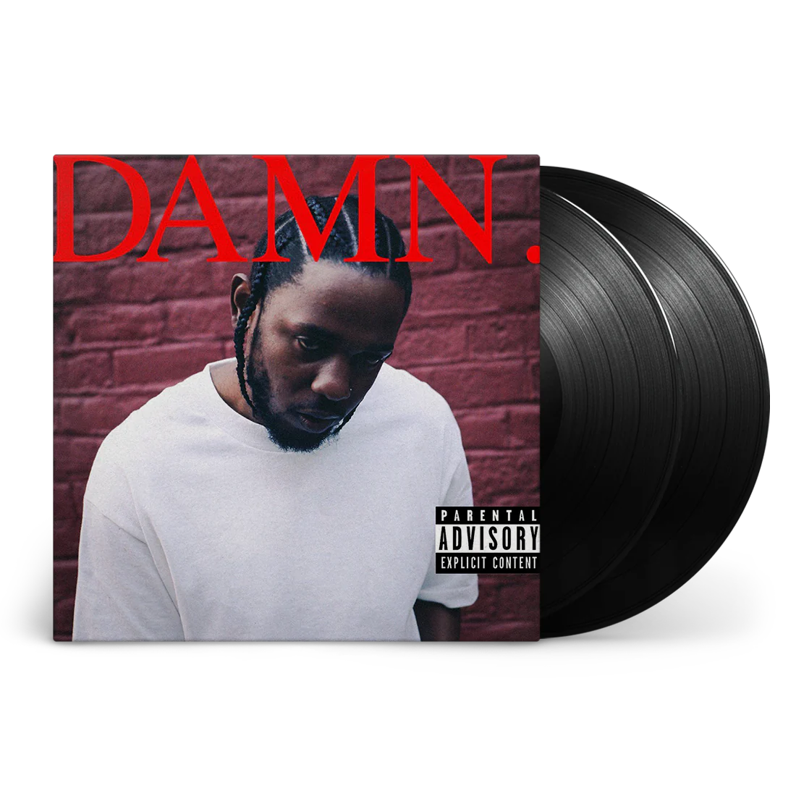
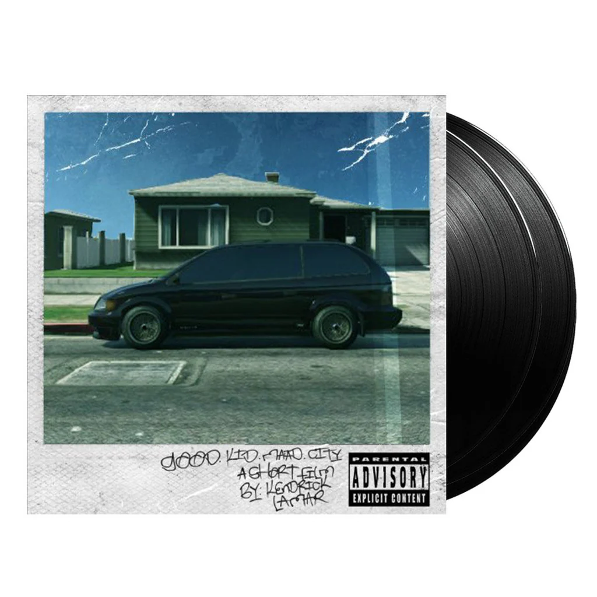
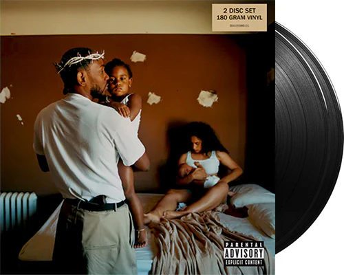
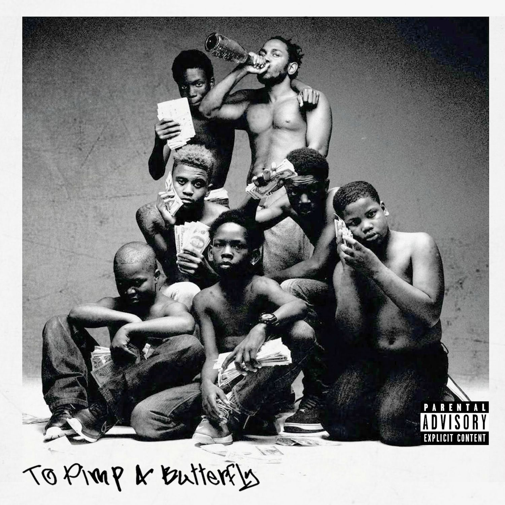

💽ALBUM💽
DAMN.
▶︎•၊၊||၊|။|||||။၊|။•
↻ ◁ || ▷ ↺
💽ALBUM💽
good kid, m.A.A.d city
▶︎•၊၊||၊|။|||||။၊|။•
↻ ◁ || ▷ ↺
💽ALBUM💽
Mr. Morale & the Big Steppers
▶︎•၊၊||၊|။|||||။၊|။•
↻ ◁ || ▷ ↺
💽ALBUM💽
To Pimp a Butterfly
▶︎•၊၊||၊|။|||||။၊|။•
↻ ◁ || ▷ ↺

About
An American rapper and songwriter. Often regarded as one of the greatest rappers of all time, he is the only musician outside of the classical and jazz genres to be awarded the Pulitzer Prize for Music. His songwriting, noted for its cinematic approach, often includes social commentary and political criticism. Lamar began releasing music under the stage name K.Dot while he was attending high school. He signed with Top Dawg Entertainment (TDE) in 2005, where he co-founded the hip hop supergroup Black Hippy. Following the success of his alternative rap debut album Section.80 (2011), Lamar secured a joint contract with Dr. Dre's Aftermath Entertainment and Interscope Records. He rose to prominence with his gangsta rap-influenced second album Good Kid, M.A.A.D City (2012) and its top 40 singles "Swimming Pools (Drank)", "Poetic Justice" and "Bitch, Don't Kill My Vibe". It is the longest-charting hip hop studio album on the Billboard 200, spending over ten consecutive years on the chart, where it still remains. Inspired by a visit to South Africa, Lamar embraced jazz and G-funk styles on his third album, To Pimp a Butterfly (2015). It became his first of four consecutive number-one albums in the U.S., and was one of the most critically acclaimed albums of the 2010s. Lamar's work on the remix of Taylor Swift's "Bad Blood" garnered his first number-one song on the Billboard Hot 100. His critical and commercial success continued with his R&B and pop-leaning fourth album Damn (2017), yielding his second chart-topping single "Humble". The double album Mr. Morale & the Big Steppers (2022) concluded Lamar's tenure with TDE and Aftermath. His 2024 feud with Drake spawned the number-one songs "Like That" and "Not Like Us". Lamar has received various accolades throughout his career, including one Primetime Emmy Award, one Brit Award, four American Music Awards, six Billboard Music Awards, 11 MTV Video Music Awards (including two Video of the Year wins), 17 Grammy Awards (the third-most won by a rapper), and 29 BET Hip Hop Awards (the most won by any artist). Time listed him as one of the 100 most influential people in the world in 2016. Two of his concert tours, the Damn Tour (2017–2018) and the Big Steppers Tour (2022–2024), are amongst the highest-grossing rap tours in history. Three of his works were included in Rolling Stone's 2020 revision of the 500 greatest albums of all time. Outside of music, Lamar co-founded the creative company PGLang and ventured into film with his creative partner, Dave Free.
Drake feud and other projects
Lamar's conflict with Drake re-escalated in March 2024 with his surprise appearance on Future and Metro Boomin's track "Like That".The song spent three consecutive weeks atop the Billboard Hot 100, becoming Lamar's third number-one single and his first song to debut at the top spot. From April to May, he released the Drake-aimed diss singles "Euphoria", "6:16 in LA", "Meet the Grahams", and "Not Like Us"; all of which were either positively received or acclaimed by critics. The latter installment marked the first rap song to lead the Hot 100 with a limited tracking week. A celebratory one-off concert, titled The Pop Out: Ken & Friends, was held on Juneteenth. On Independence Day, Lamar released the music video of "Not Like Us", with the beginning of it hinting at new music.

Achievements
Throughout his career, Lamar has won 17 Grammy Awards (the third-most by a rapper in history), a Primetime Emmy Award, four American Music Awards, 29 BET Hip Hop Awards (the most won by any artist), 11 MTV Video Music Awards (including two Video of the Year wins), 6 Billboard Music Awards, and a Brit Award. As a songwriter, he has received nominations for an Academy Award and a Golden Globe Award. At the 58th Annual Grammy Awards, Lamar received the most Grammy nominations by a rapper in one night, with 11. During the 65th ceremony, he became the first artist from any genre to be nominated for Album of the Year with four consecutive lead studio albums since Billy Joel (1979–1983).